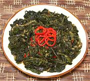

|
Sitaw (Bean) Leaves Stir FryPhilippines - Talbos ng Sitaw | ||||
| Serves: Effort: Sched: DoAhead: |
5 side ** 45 min Yes |
Filipino home cooking uses a lot of greens, mostly from the back yard garden. This recipe yields an excellent side dish of greens for either a Philippine or Western menu. | |||
|
10 2 5 3 ----- 2 1 1/3 ----- 2 |
oz cl oz --- T T c --- T |
Sitaw Leaves (1) Garlic Onion Red Chilis (2) -- Sauce Oyster Sauce (3) Fish Sauce (4) Water ----------- Oil (5) |
Prep - (20 min)
|